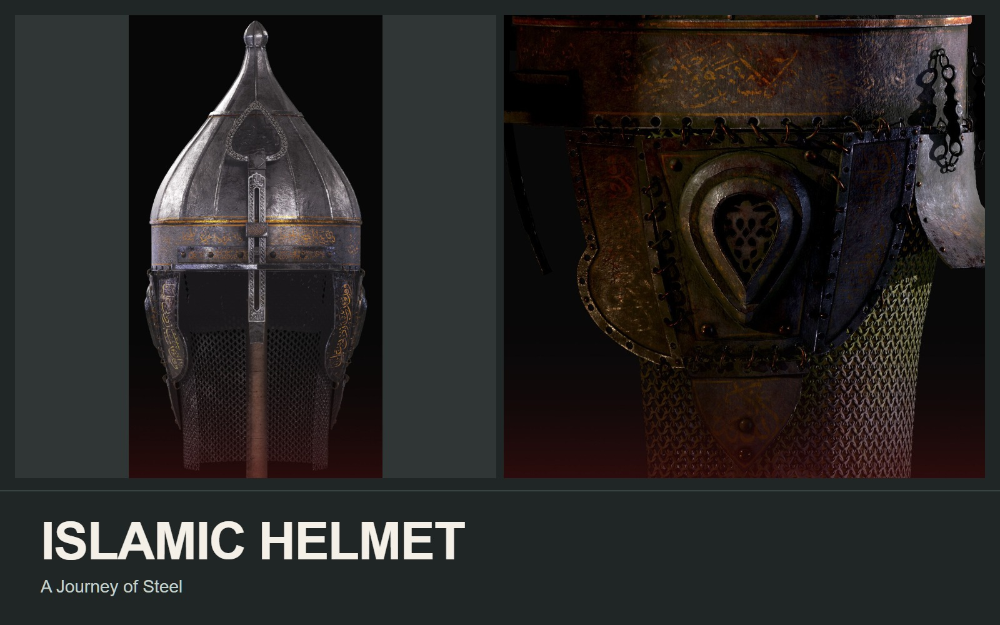

Props
Islamic Helmet
Prop modeling, UVs & four material treatments.

THE PROJECT
An ornate helmet developed through modeling, UV layout, and four contrasting material treatments.
- MY CONTRIBUTION / FOCUS
- 3D prop artist
I modeled the prop, prepared its UV layout, and developed the clean, rusted, moss-covered, and blood-stained surface presentations.
PROCESS & DESIGN
Behind the finished work.
I developed the helmet as a surface study around one consistent form. Clean metal, rust, moss, and blood change the history suggested by the same object. Close views compare engraved decoration, rivets, and the chain-mail construction; the UV image documents the layout behind the textures.
01 / Islamic Helmet
One form / four surface stories
02 / Islamic Helmet
Engraving, wear & close detail
03 / Islamic Helmet